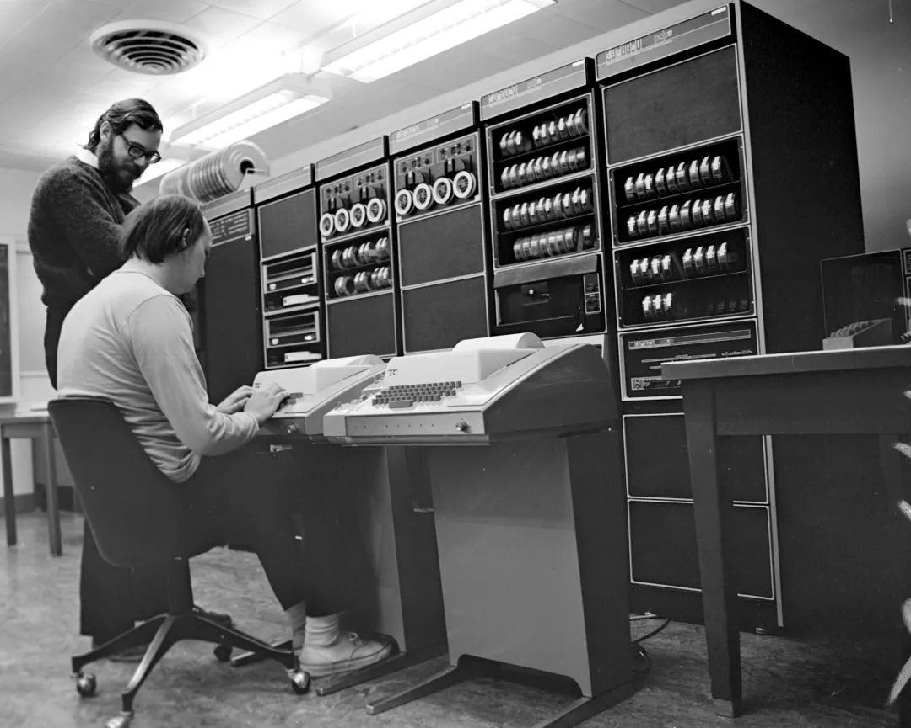
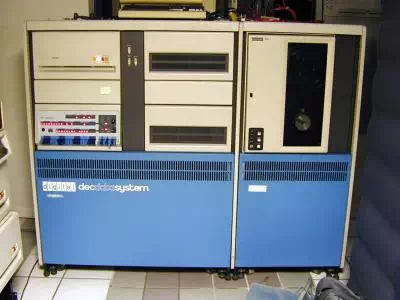
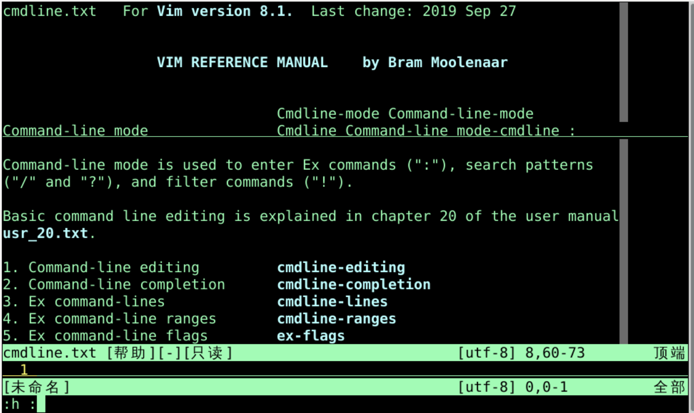
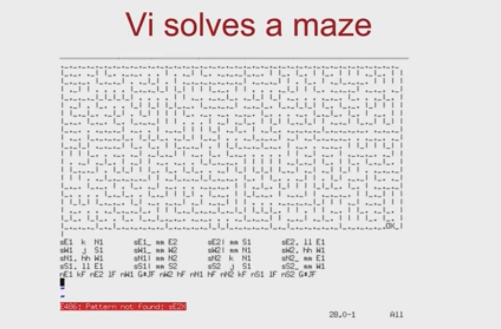
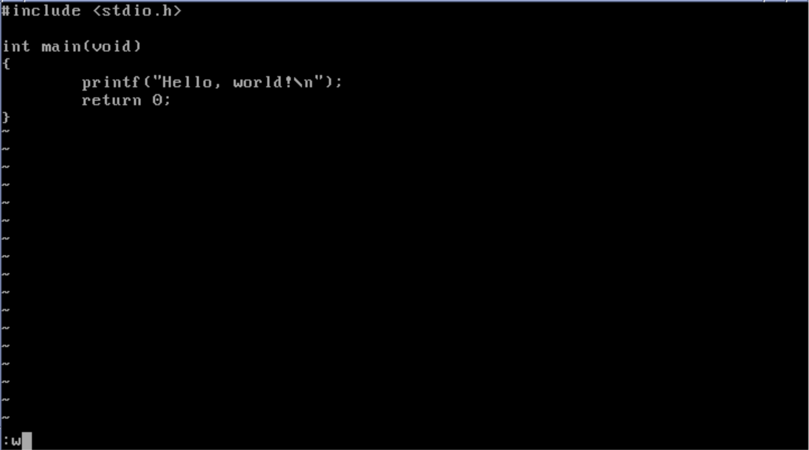
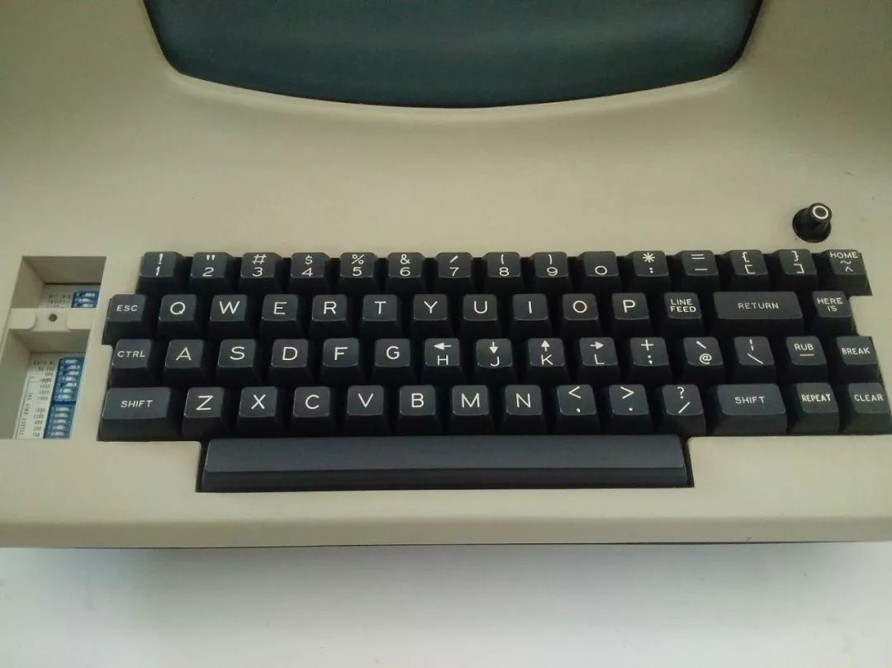
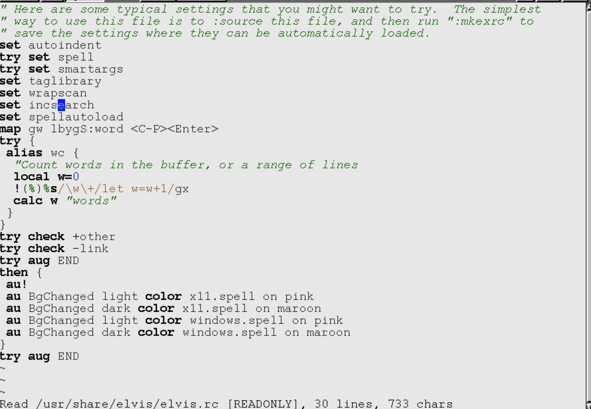

mark的定义和使用mb定义'b跳转marks,查询删除marks'a,'by从标记a的行复制到标记b的行'a,'bt.把从a到b的行复制到当前位置'a,'bm$把从a到b的行移动到文档最后Ken Tompson
Ken Thompson Thompson刚刚在加州大学伯克利分校完成了电气工程和计算机科学的硕士学位在伯克利他使用一个名为 QED 的文本编辑器Thompson 到达贝尔实验室后做的第一件事就是为麻省理工学院兼容分时系统重写 QEDMultics 项目写了另一个版本的 QEDMultics 项目试图创建一个可行的商业分时操作系统AT&T 认为这个项目毫无进展并退出Thompson 和贝尔实验室资深研究员 Dennis RitchieUnix。1969 年 8 月Thompson “给操作系统、shell、编辑器和汇编程序分别分配了一个星期”ed QED 的，但并不完全是 QED 的复现Thompson 决定放弃某些 QED 的功能QED 允许用户打开多个缓冲区同时编辑多个文件ed 一次只使用一个缓冲区QED 可以执行包含命令的缓冲区ed 则不能。这些简化可能是必要的Dennis Ritchie 曾说过QED 的高级正则表达式是“并不大的损失”ed 现在是 POSIX 规范的一部分POSIX 的系统ed ed 命令都是 Vim 的一部分w 命令来写入磁盘缓冲区q 命令来退出编辑器wqed 与 Vim 一样insert 命令（i）、append 命令（a）或 change 命令（c）ed 还引入了 s/foo/bar/g 语法来查找和替换文本ed 名字来自于 editor 编辑器ed 不允许你编辑开放缓冲区中那些被其他行围绕的行ed 在每次修改的时候都必须重新打印整个文件ed 没有任何机制来“清除”屏幕上的内容eded 就像是尝试用一个低电量的手电筒在黑暗房间中摸索edsudo apt install edvi 的老祖宗ls -lah > oeasy.txted oeasy.txt1显示第1行2,5p,显示2到5行4,6p命令在vi也能用，含义是printThompson 和 Ritchie 来说， ed 已经足够好了Unix 对新手敌意的例子而臭名昭著George Coulouris 的人`Unix 系统上开发了一个改进版 edCoulouris 利用他在玛丽女王学院的视频显示器开发他的编辑器ed 不同的是Coulouris 的程序允许用户编辑在屏幕中的一行代码Vim 中每次编辑一行）Thompson 拜访玛丽女王学院时Coulouris 已经写好的程序Coulouris 将他的程序命名为 emthe editor for mortals,这也是 em 名字来源。（George Coulouris）

BSD UnixBill JoyBill Joy 大开眼界Coulouris 把 em 引入了加州大学伯克利分校CS 系访学Coulouris 遇到了Bill JoyCoulouris 斯向 Joy 展示了 emJoy 以 Coulouris 的源代码为基础ed 建立了一个名为 ex 的改进版 edex 与第 1 个版本的 BSD Unix 捆绑在一起ex 在很大程度上与 ed兼容
（Bill Joy）


vi 的可执行文件ex vi 名字来自于 visual 可视模式ex/vi （后来称为 vi）建立了我们现在使用的 Vim 中大多数的约定ed 的一部分Lear Siegler ADM-3Ah、j、k 和 l 键上绘制光标键ADM-3A键盘上 escape 键位置是今天我们所使用的键盘上的 tab 键
esc 虽然很远ed 中被长期诟病的问题wqvi 部分还包括yanking和putting标记markerset 命令Vim 中使用的的基本文本编辑过程vi 中使用的特性vi 是除 ed 之外唯一与 BSD Unix 捆绑的文本编辑器Emacs 可能会花费数百美元GNU Emacs 之前vi 变得非常流行vi 是 ed 的直接衍生版本AT&T 的源代码vi 的开源版本STEVIE （专门为 VI 爱好者的 ST 编辑器）出现于1987年Elvis 出现于 1990 年nvi 出现于 1994 年ElvisVim 中Elvis 用户推动了这些功能的加入Elvis 加了一个图形用户界面Elvis却挣了很多钱Elvis无法得到相应的资源和回馈
ed 的历史vim 进化到今天ssh 的时候直接 vim 就很方便